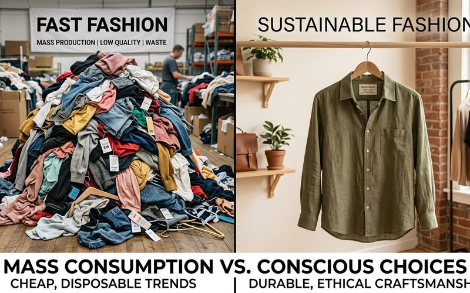

As escolhas que fazemos ao vestir têm impactos que vão muito além do nosso armário. Cada peça de roupa que compramos representa uma cadeia de decisões produtivas, ambientais e econômicas — e quando colocamos em perspectiva o que diferencia o brechó do fast fashion, os dados revelam uma história que merece ser conhecida.
Não se trata de culpa ou julgamento — trata-se de informação. Compreender o que está por trás de cada modelo de consumo é o primeiro passo para fazer escolhas mais conscientes e satisfatórias.
A indústria da moda é responsável por cerca de 10% das emissões globais de carbono — mais do que a aviação e o transporte marítimo combinados. A produção de uma única camiseta de algodão consome aproximadamente 2.700 litros de água — o equivalente ao que uma pessoa bebe em dois anos e meio. A cada segundo, o equivalente a um caminhão de lixo de roupas é descartado em aterros ou incinerado em algum lugar do mundo.
Comprar uma peça de brechó, por outro lado, não gera nova demanda produtiva. Nenhum tecido adicional é produzido, nenhuma água extra é consumida, nenhuma emissão nova é gerada. A peça já existe — o que muda é quem a usa. Do ponto de vista ambiental, cada compra em brechó é uma escolha de impacto neutro em comparação com a cadeia produtiva do item novo equivalente.
Há uma métrica que os especialistas em moda consciente usam chamada "custo por uso" — o valor total gasto na peça dividido pelo número de vezes que ela foi usada. Uma calça de fast fashion que custa R$80 e é usada 8 vezes tem custo por uso de R$10. Uma calça de brechó que custa R$60, de qualidade superior, e é usada 60 vezes tem custo por uso de R$1. A matemática é simples — e revela por que a qualidade, mesmo quando o preço inicial é mais alto, é sempre mais econômica a longo prazo.
O fast fashion foi desenhado para ter vida curta: tecidos de gramatura baixa, costura superficial, corantes que desbotam rapidamente. Essa obsolescência programada não é um defeito — é o modelo de negócio. O brechó representa o oposto: peças que sobreviveram ao tempo justamente porque foram feitas para durar.
Os dados do mercado global de revenda de roupas mostram crescimento consistente e acelerado. A geração mais jovem de consumidoras é a que mais adere ao modelo de segunda mão — não por necessidade, mas por escolha consciente e identidade de valores. No Brasil, o mercado de brechós cresceu significativamente nos últimos anos, com o surgimento de plataformas digitais e o fortalecimento de espaços físicos de curadoria.
O Brechó Outra Vez existe nesse cruzamento entre tradição e contemporaneidade: um espaço físico no Savassi que pratica a curadoria como filosofia, onde cada peça é escolhida com critério e cada cliente encontra não apenas roupas, mas uma forma de se relacionar com a moda que faz sentido além da etiqueta de preço. Os números apoiam essa escolha — e a experiência a confirma.